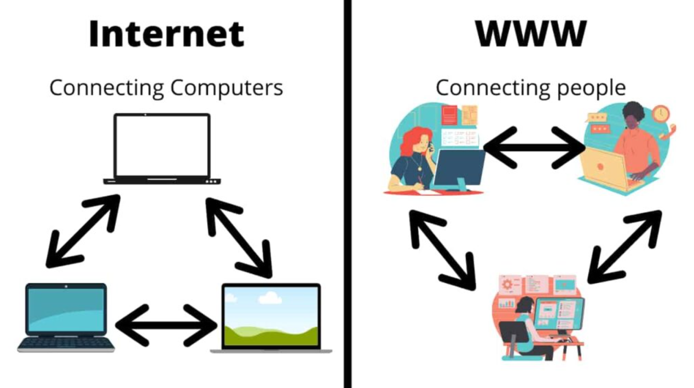
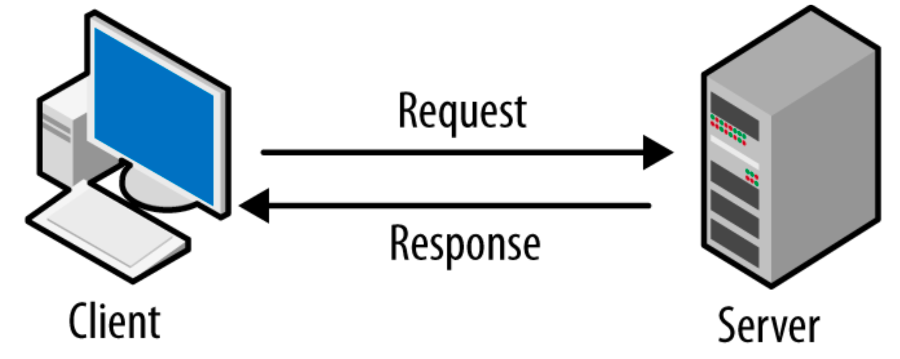
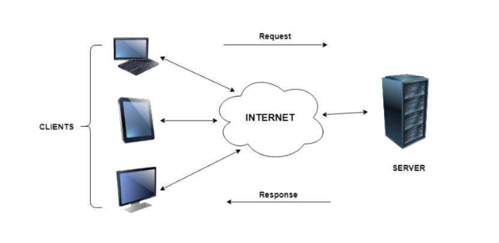
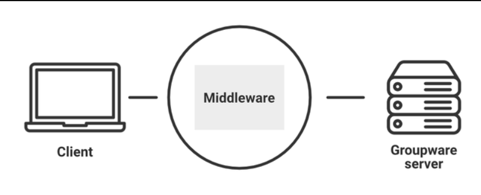
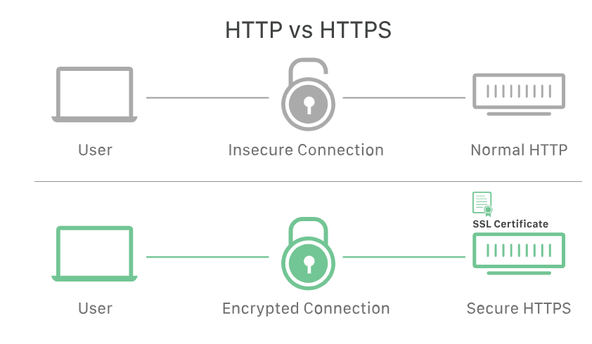
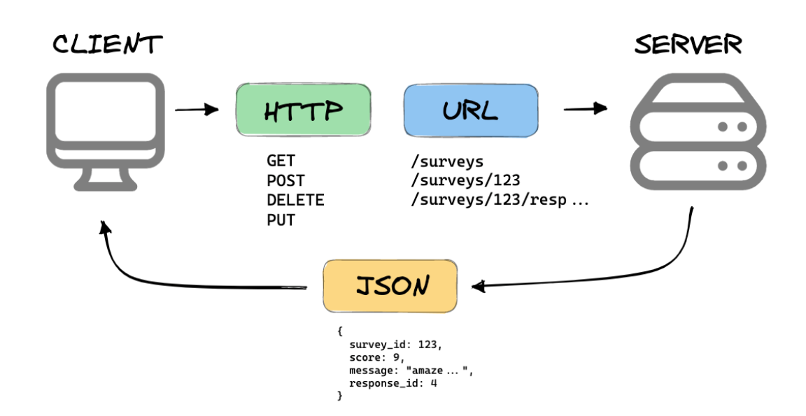

INTRODUCTION TO WEBSTACK DEVELOPMENT
What is web stack?
A web stack is the collection of software used for web development that incorporates, at a minimum, an operating system (OS), a programming language, database software and a web server.
A web stack, also known as a web application stack, is a type of solution stack. It's a collection of software applications that performs a particular task. In this case, the task or purpose is to enable web development, that is, the development of websites and web applications.
The term stack is used because the system's individual components and technologies are built upon one another and work in tandem for web development projects. Moreover, the stack can be used repeatedly for multiple projects. Selecting the right web stack is important because the wrong choices can prove costly.
INTERNET vs WWW
The Internet is a global network of networks while the Web, also referred to formally as World Wide Web (www) is a collection of information that is accessed via the Internet. Another way to look at this difference is; the Internet is infrastructure while the Web is served on top of that infrastructure. Alternatively, the Internet can be viewed as a big book store while the Web can be viewed as a collection of books on that store. At a high level, we can even think of the Internet as hardware and the Web as software!.
INTERNET
The Internet is a global network of interconnected computer networks that communicate with each other over the Internet Protocol Suite (TCP/IP). It is a network of networks made up of private, public, academic, and government networks ranging from local to global in extent and connected by a diverse set of electronic, wireless, and optical networking technologies.
WORLD WIDE WEB
The World Wide Web (WWW), often called the Web, is a system of interconnected webpages and information that you can access using the Internet. It was created to help people share and find information easily, using links that connect different pages together. The Web allows us to browse websites, watch videos, shop online, and connect with others around the world through our computers and phones.

CLIENT-SERVER MODEL
The Client-server model is a distributed application structure that partitions tasks or workloads between the providers of a resource or service, called servers, and service requesters called clients. In the client-server architecture, when the client computer sends a request for data to the server through the internet, the server accepts the requested process and delivers the data packets requested back to the client. Clients do not share any of their resources. Examples of the Client-Server Model are Email, World Wide Web, etc.
CLIENT
A client is a program that runs on the local machine requesting service from the server. A client program is a finite program means that the service started by the user and terminates when the service is completed.
SERVER
A server is a program that runs on the remote machine providing services to the clients. When the client requests for a service, then the server opens the door for the incoming requests, but it never initiates the service.
A server program is an infinite program means that when it starts, it runs infinitely unless the problem arises. The server waits for the incoming requests from the clients. When the request arrives at the server, then it responds to the request.

CLIENT-SERVER COMPUTING
In client server computing, the clients requests a resource and the server provides that resource. A server may serve multiple clients at the same time while a client is in contact with only one server. Both the client and server usually communicate via a computer network but sometimes they may reside in the same system.
An illustration of the client server system is given as follows −

Advantages of Client Server Computing
- All the required data is concentrated in a single place i.e. the server. So it is easy to protect the data and provide authorisation and authentication.
- The server need not be located physically close to the clients. Yet the data can be accessed efficiently.
- It is easy to replace, upgrade or relocate the nodes in the client server model because all the nodes are independent and request data only from the server.
- All the nodes i.e clients and server may not be build on similar platforms yet they can easily facilitate the transfer of data.
MIDDLEWARE
Middleware is software that lies between an operating system and the applications running on it. Essentially functioning as hidden translation layer, middleware enables communication and data management for distributed applications. It’s sometimes called plumbing, as it connects two applications together so data and databases can be easily passed between the “pipe.” Using middleware allows users to perform such requests as submitting forms on a web browser, or allowing the web server to return dynamic web pages based on a user’s profile.

HTTP
HTTP stands for HyperText Transfer Protocol. It is the main way web browsers and servers communicate to share information on the internet. Tim Berner invents it. HyperText is the type of text that is specially coded with the help of some standard coding language called HyperText Markup Language (HTML). HTTP/2 is the new version of HTTP. HTTP/3 is the latest version of HTTP, which is published in 2022.
When you visit a website, HTTP helps your browser request and receive the data needed to display the web pages you see. It is a fundamental part of how the internet works, making it possible for us to browse and interact with websites. In this article, we are going to discuss the Full form of HTTP along with its working, advantages, and disadvantages.
Key Points
- Basic Structure: HTTP forms the foundation of the web, enabling data communication and file sharing.
- Web Browsing: Most websites use HTTP, so when you click on a link or download a file, HTTP is at work.
- Client-Server Model: HTTP works on a request-response system. Your browser (client) asks for information, and the website’s server responds with the data.
- Application layer Protocol: HTTP operates within the Internet Protocol Suite, managing how data is transmitted and received.
HTTP request is simply termed as the information or data that is needed by Internet browsers for loading a website. This is simply known as HTTP Request.
There is some common information that is generally present in all HTTP requests. These are mentioned below.
- HTTP Version
- URL
- HTTP Method
- HTTP Request Headers
- HTTP Body
HTTP Request Headers
HTTP Request Headers generally store information in the form of key-value and must be present in each HTTP Request. The use of this Request Header is to provide core information about the client’s information, etc.
HTTP Request Body
HTTP Request Body simply contains the information that has to be transferred. HTTP Request has the information or data to be sent to these browsers.
HTTP Method
HTTP Methods are simply HTTP Verb. In spite of being present so many HTTP Methods, the most common HTTP Methods are HTTP GET and HTTP POST. These two are generally used in HTTP cases. In HTTP GET, the information is received in the form of a website.
What is HTTP Response
HTTP Response is simply the answer to what a Server gets when the request is raised. There are various things contained in HTTP Response, some of them are listed below.
- HTTP Status Code
- HTTP Headers
- HTTP Body

HTTP Response Headers
HTTP Response headers are simply like an HTTP Request where it has that work to send some important files and data to the HTTP Response Body.
HTTP Status Code
HTTP Responses are the responses that are received successfully upon the request. Generally, it comes under the requests generated by the web. In most cases, the request is to transfer the HTML data into a webpage.
HTTP Response Headers
HTTP Status Codes are the 3-digit codes that tell the message or simply tell us about the HTTP Request whether it has been completed or not. There are simply 5 types of status codes.
- 1xx Informative
- 2xx Achievement
- 3xx Reorientation
- 4xx Client Mistake
- 5xx Error on the Server
Cookies in HTTP
An HTTP cookie (web cookie, browser cookie) is a little piece of data that a server transmits to a user’s web browser. When making subsequent queries, the browser may keep the cookie and transmit it back to the same server. An HTTP cookie is typically used, for example, to maintain a user’s login state, and to determine whether two requests originate from the same browser. For the stateless HTTP protocol, it retains stateful information.
Conclusion
In summary, HTTP stands for “Hypertext Transfer Protocol” and is essential for web communication. It enables your browser to request and receive information from websites, making online browsing possible. HTTP is the basic method used by web browsers and servers to communicate and share information on the internet, making it possible for us to browse and interact with websites.
SSL
SSL, or Secure Sockets Layer, is an encryption-based Internet security protocol. It was first developed by Netscape in 1995 for the purpose of ensuring privacy, authentication, and data integrity in Internet communications. SSL is the predecessor to the modern TLS encryption used today.
A website that implements SSL/TLS has "HTTPS" in its URL instead of "HTTP."

How does SSL work?
- In order to provide a high degree of privacy, SSL encrypts data that is transmitted across the web. This means that anyone who tries to intercept this data will only see a garbled mix of characters that is nearly impossible to decrypt.
- SSL initiates an authentication process called a handshake between two communicating devices to ensure that both devices are really who they claim to be.
- SSL also digitally signs data in order to provide data integrity, verifying that the data is not tampered with before reaching its intended recipient.
REST
REST is a set of architectural constraints, not a protocol or a standard. API developers can implement REST in a variety of ways.
When a client request is made via a RESTful API, it transfers a representation of the state of the resource to the requester or endpoint. This information, or representation, is delivered in one of several formats via HTTP: JSON (Javascript Object Notation), HTML, XLT, Python, PHP, or plain text. JSON is the most generally popular file format to use because, despite its name, it’s language-agnostic, as well as readable by both humans and machines.
Something else to keep in mind: Headers and parameters are also important in the HTTP methods of a RESTful API HTTP request, as they contain important identifier information as to the request's metadata, authorization, uniform resource identifier (URI), caching, cookies, and more. There are request headers and response headers, each with their own HTTP connection information and status codes.

SEARCH ENGINE
Search engines are programs that allow users to search and retrieve information from the vast amount of content available on the internet. They use algorithms to index and rank web pages based on relevance to a user’s query, providing a list of results for users to explore. Popular search engines include Google, Bing, and Yahoo.
We can say that a search engine is an internet-based software program whose main task is to collect a large amount of data or information about what is on the internet, then categorize the data or information and then help user to find the required information from the categorized information. Google, Yahoo, and Bing are the most popular Search Engines.

SEO
Search Engine Optimization (SEO) is a set of practices and techniques that focus on increasing a website’s visibility and ranking in search engine results. But when you dive into SEO or Search Engine Optimization, you will come across several kinds of SEO claiming to be types of SEO, which can be overwhelming. So in this post, we have curated all the types of SEO Optimization, explaining all the necessary information for you to understand the types of search engine optimization.
ON-PAGE
The first an the foremost type of SEO Optimization is On-Page SEO, It refers to the optimization of individual web pages to improve their ranking in search engine results pages (SERPs). It is a methods of search engine optimization that involves optimizing various elements of a web page to make it more relevant and appealing to search engines and users.

OFF-PAGE
Off-page SEO refers to the optimization of factors outside of a website to improve its ranking in SERPs. It involves building backlinks, promoting the website on social media, and engaging in other activities to increase the authority and popularity of the website.

BLACK HAT SEO
Black hat SEO refers to a set of practices that are used to increase a site or page’s rank in search engines through means that violate the search engine’s terms of service. The term “black hat” originated in Western movies to distinguish the “bad guys” from the “good guys,” who wore white hats (see white hat SEO). Recently, it’s been used more commonly to describe computer hackers, virus creators, and those who perform unethical actions with computers.
For Example: Content Automation, Doorway Pages, Hidden Text or Links, Keyword Stuffing, Reporting a Competitor (or Negative SEO), etc.
WHITE HAT SEO
White Hat SEO: White Hat SEO refers that working within search engines’ terms of service to improve a site’s search engine results page (SERP) rankings while maintaining the integrity of your website and staying within the search engines’ terms of service.
For Example: Offering quality content and services, Fast site loading times and mobile-friendliness, Using descriptive, keyword-rich meta tags, Making your site easy to navigate, etc.
Retrieve information from the vast amount of content available on the internet. They use algorithms to index and rank web pages based on relevance to a user’s query, providing a list of results for users to explore. Popular search engines include Google, Bing, and Yahoo.
We can say that a search engine is an internet-based software program whose main task is to collect a large amount of data or information about what is on the internet, then categorize the data or information and then help user to find the required information from the categorized information. Google, Yahoo, and Bing are the most popular Search Engines.